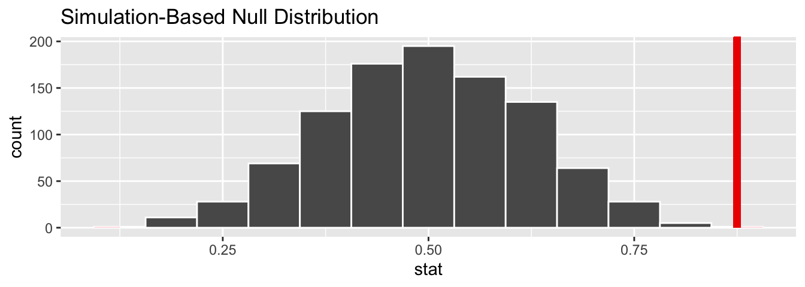

Chapter 2 Introduction
2.1 1/21/20 Agenda
- Syllabus & Course Outline
- Example: Friend or Foe
2.2 Course Logistics
What is Statistics? Generally, statistics is the academic discipline which uses data to make claims and predictions about larger populations of interest. It is the science of collecting, wrangling, visualizing, and analyzing data as a representation of a larger whole. It is worth noting that probability represents the majority of mathematical tools used in statistics, but probability as a discipline does not work with data. Having taken a probability class may help you with some of the mathematics covered in the course, but it is not a substitute for understanding the basics of introductory statistics.

Figure 2.1: Probability vs. Statistics
- descriptive statistics describe the sample at hand with no intent on making generalizations.
- inferential statistics use a sample to make claims about a population
Vocabulary
- A statistic is a numerical measurement we get from the sample, a function of the data. [Also sometimes called an estimate.]
- A parameter is a numerical measurement of the population. We never know the true value of the parameter.
What is the content of Math 58(B)? This class will be an introduction to statistical ideas using R. We will cover the majority of statistical methods which are used in standard analyses (e.g., t-tests, chi-squared analysis, confidence intervals, binomial tests, etc.). The main inferential techniques will be covered using both theoretical approximations (e.g., the central limit theorem) as well as computational methods (e.g., permutation tests and bootstrapping). Focus will be on understanding he methods and interpreting results.
Our goal in this course is to learn how to better evaluate quantitative information with regards to data. We’ll be sure to keep in mind:What is the difference between Math 58 and Math 58B?
The two classes are remarkably similar in content and structure. Indeed, there are more similarities to the classes than there are differences. The main differences have to do with a handful of topics which are different across the two classes.
| topic for Math 58 | topic for Math 58B | |
|---|---|---|
| early in the semester | Binomial probabilities | relative risk & odds ratios |
| later in the semester | introduction to multiple regression | introduction to logistic regression |
Who should take Math 58(B)? Every educated citizen should have a basic understanding of statistics. Ok, ok, I have my own biases, but I’m not the only person who thinks this! (https://www.ted.com/talks/arthur_benjamin_s_formula_for_changing_math_education) In terms of your academic interests, you should take introductory statistics if you would like to take upper division statistics or if you are planning to analyze data in a field outside of statistics (e.g., biology, EA, psychology, etc.). Upper division statistics courses require introductory statistics, and it is not easy to just “learn” statistics on your own over the summer. I highly recommend taking an introductory statistics course.
If you have already taken AP Statistics, you may or may not want to repeat the material. If you had a strong course with an excellent teacher and scored well on the exam, you probably do not need to repeat the material. If you are uncertain about many of the concepts, then you may want to re-take the course before jumping into upper division statistics courses. We will use R extensively, and you probably didn’t use R in your AP Statistics classes. Most upper division statistics classes will expect you to be able to jump into R head first, and introductory statistics gives a more gentle introduction to R.
What are the prerequisites for Math 58(B)?
The formal prerequisite is a semester of calculus, but we do almost no calculus in the entire semester. However, a student in Math 58(B) should be quantitatively inclined and ready to see many new mathematical, algorithmic, and computational ideas quickly throughout the semester.
Is there overlap with other classes? There is considerable overlap between Math 58 and Math 58B; you should not take both Math 58 and Math 58B. The differences between the two sections lie in the examples as well as a handful of topics that are different across the two courses. There is also quite a bit of overlap with other introductory statistics courses (e.g., Econ 57, Pysch 158, Politics 90, AP Statistics). Some introductory statistics courses cover quite a bit of probability without getting deeply into inferential ideas. We will focus on statistics instead of probability with an emphasis on understanding the intuition and mathematical derivations that inform the analysis tool. We will also focus on how the computer can help us gain a deeper understanding of the analyses we are doing.
When should I take Math 58 or Math 58B? Introductory (Bio)Statistics should be taken as early in your undergraduate schedule as possible. By taking Math 58(B) you will open up the possibilities for taking upper division statistics classes. Additionally, the background covered in Math 58(B) will provide you with a deeper understanding of the concepts you are covering in your science and social science courses.
What is the workload for Math 58(B)? Math 58(B) meets twice a week for 75 min for lecture and once a week for an hour for lab. Every week there will be one homework and one lab assignment. There are two midterm exams, each with an in-class and take-home section. The final exam will also have in-class and take-home parts. The class is not known to be extremely difficult or time consuming; however, it does require that you stay up with the material, do all of the assignments, and come to all class meetings (participation is a part of your grade).
What software will we use? Will there be any real world applications? Will there be any mathematics? Will there be any CS? All of the work will be done in R using RStudio as a front end. You will need to either download R and RStudio (both are free) onto your own computer or use them on Pomona’s server. The class is a mix of many real world applications and case studies, some higher level math, programming, and communication skills. The final project requires your own analysis of a dataset of your choosing.
- You may use R on the Pomona server: https://rstudio.campus.pomona.edu/ (All Pomona students will be able to log in immediately. Non-Pomona students need to go to ITS at Pomona to get Pomona login information.)
- If you want to use R on your own machine, you may. Please make sure all components are updated: R is freely available at http://www.r-project.org/ and is already installed on college computers. Additionally, installing R Studio is required http://rstudio.org/.
- http://swirlstats.com/ is one way to walk through learning the basics of R.
- All assignments should be turned in using R Markdown compiled to pdf.
, by Ismay and Kim](figs/RRstudio.jpg)
Figure 2.2: Taken from Modern Drive: An introduction to statistical and data sciences via R, by Ismay and Kim
, PhD student at Newcastle University](figs/cookingRstudio.jpg)
Figure 2.3: Jessica Ward, PhD student at Newcastle University
2.3 Example: Friend or Foe
This example comes from Investigation 1.1: Friend or Foe? Chance and Rossman (2018). The idea is to use simulation to determine how likely our data would be if nothing interesting was going on.
In a study reported in the November 2007 issue of Nature, researchers investigated whether infants take into account an individual’s actions towards others in evaluating that individual as appealing or aversive, perhaps laying for the foundation for social interaction (Hamlin, Wynn, and Bloom, 2007). In other words, do children who aren’t even yet talking still form impressions as to someone’s friendliness based on their actions? In one component of the study, 10-month-old infants were shown a “climber” character (a piece of wood with “googly” eyes glued onto it) that could not make it up a hill in two tries. Then the infants were shown two scenarios for the climber’s next try, one where the climber was pushed to the top of the hill by another character (the “helper” toy) and one where the climber was pushed back down the hill by another character (the “hinderer” toy). The infant was alternately shown these two scenarios several times. Then the child was presented with both pieces of wood (the helper and the hinderer characters) and asked to pick one to play with. Videos demonstrating this component of the study can be found at http://campuspress.yale.edu/infantlab/media/.
One important design consideration to keep in mind is that in order to equalize potential influencing factors such as shape, color, and position, the researchers varied the colors and shapes of the wooden characters and even on which side the toys were presented to the infants. The researchers found that 14 of the 16 infants chose the helper over the hinderer.
Always Ask
- What are the observational units?
- infants
- What is the variable? What type of variable?
- choice of helper or hindered: categorical
- What is the statistic?
- \(\hat{p}\) = proportion of infants who chose helper = 14/16 = 0.875
- What is the parameter?
- p = proportion of all infants who might choose helper (not measurable!)
p-value is the probability of our data or more extreme if nothing interesting is going on.
| completely arbitrary cutoff | \(\rightarrow\) | generally accepted conclusion |
|---|---|---|
| p-value \(>\) 0.10 | \(\rightarrow\) | no evidence against the null model |
| 0.05 \(<\) p-value \(<\) 0.10 | \(\rightarrow\) | moderate evidence against the null model |
| 0.01 \(<\) p-value \(<\) 0.05 | \(\rightarrow\) | strong evidence against the null model |
| p-value \(<\) 0.01 | \(\rightarrow\) | very strong evidence against the null model |
Computation
library(infer)
# to control the randomness
set.seed(47)
# first create a data frame with the Infant data
Infants <- read.delim("http://www.rossmanchance.com/iscam3/data/InfantData.txt")
Infants %>% head()## choice
## 1 helper
## 2 hinderer
## 3 helper
## 4 helper
## 5 helper
## 6 helper# then find the proportion who help
(p_obs <- Infants %>%
specify(response = choice, success = "helper") %>%
calculate(stat = "prop") )## # A tibble: 1 x 1
## stat
## <dbl>
## 1 0.875# now apply the infer framework to get the null proportion
null_help <- Infants %>%
specify(response = choice, success = "helper") %>%
hypothesize(null = "point", p = .5) %>%
generate(reps = 1000, type = "simulate") %>%
calculate(stat = "prop")
# then visualize the null sampling distribution & p-value
visualize(null_help, bins = 13) +
shade_p_value(obs_stat = p_obs, direction = "two_sided")
## # A tibble: 1 x 1
## p_value
## <dbl>
## 1 0.002Logic for what we believe
- If we look back to the study, we can tell that the researchers varied color, shape, side, etc. to make sure there was nothing systematic about how the infants chose the block (e.g., if they all watch Blue’s Clues they might love the color blue, so we wouldn’t always want the helper shape to be blue).
The excellent design survey rules out outside influence as the reason so many of the infants chose the helper shape.
We ruled out random chance as the mechanism for the larger number of infants who chose the helper shape. (We reject the null hypothesis.)
We conclude that babies are inclined to be helpful. That is, they are more likely to choose the helper than the hindered. [Note: we don’t have any evidence for why they choose the helper. That is, they might be predisposed. They might be modeling their parents. They might notice that they need a lot of help, etc.]
References
Chance, Beth, and Allan Rossman. 2018. Investigating Statistics, Concepts, Applications, and Methods. 3rd ed. http://www.rossmanchance.com/iscam3/.